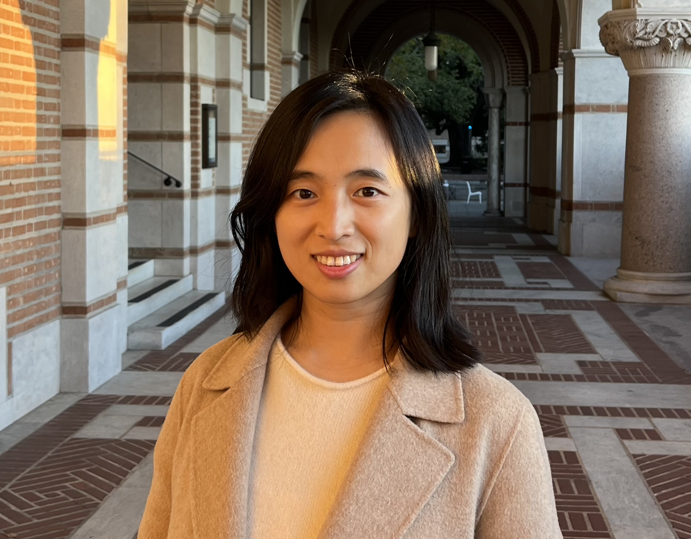
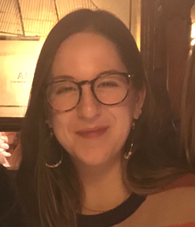

Yini Zhang (Ph.D., University of Wisconsin-Madison) is an assistant professor in the Department of Communication at the University at Buffalo. She applies computational methods to the study of networked actors on social media, information flows across traditional and social media, and their implications for journalism and democracy. Her work has been published in leading communication journals such as Journal of Communication, Journal of Computer-Mediated Communication, and New Media & Society.
contact: yzhang20@buffalo.edu
Jiyoun Suk (Ph.D., University of Wisconsin-Madison) is an Assistant Professor in the Department of Communication at the University of Connecticut. In her research, she looks at how the communication processes in the contemporary media environment shape social trust, activism, and political polarization, primarily employing computational methods. In particular, she is interested in how people understand different social groups marginalized communities. Her primary line of research examines the role of networked communications in bringing out voices of social justice and equality, as in the case of the #MeToo movement. She currently looks at how digital activism is contextualized across specific geographies and social media platforms.
contact: jiyoun.suk@uconn.edu
Nojin Kwak (Ph.D., University of Wisconsin-Madison) is a professor in the Department of Communication at the University at Buffalo (UB), State University of New York. In addition, he currently serves as Vice Provost for International Education at UB. Kwak’s research centers on the role of communication media in civic and political engagement, and his recent studies analyze the impact of social media on community involvement, deliberative openness, and political participation. Kwak’s work has been published in top journals in the field, including Communication Research, Journal of Communication, Human Communication Research, New Media and Society, Journal of Computer-Mediated Communication, Political Communication, and Political Research Quarterly, and he has received numerous top paper awards at major conferences. Previously, Kwak was a professor and chair of the Department of Communication and Media at the University of Michigan.
contact: njkwak@buffalo.edu
Emma Bennett is an undergraduate student in the Department of Communication at the University of Buffalo.
Xinxia Dong (M.A., Renmin University of China) is pursuing her Ph.D. in the Department of Communication at the University at Buffalo. Xinxia’s academic interests lie in risk communication and social media. Her current published work primarily examines the risk information seeking and processing (RISP) model. She is also passionate about exploring emerging media and learning various computational methods.

Sara Holland Levin is a PhD student in Communication at the University of Connecticut. Her research focuses on political communication on social media, with a particular focus on politicization and polarization of attitudes. Sara is especially interested in how people process misinformation on social media through a political lens, and is passionate about examining these research questions from a computational perspective. At the University of Connecticut, Sara specializes in teaching digital production coursework.
Junwan Seo is a Ph.D. student in the Department of Communication at the University of Buffalo.
Rui Wang is a current Ph.D. student in the Department of Communication at the University of Buffalo, earned her M.A. in Information and Communication Studies at Rutgers University. Her research focuses on media effects and persuasion, combining computational methods with experimental and survey designs. She is particularly interested in how new technology applied to journalism reshapes public perception. She is also interested in the effect of social media discussion on public attitudes and attention on health and politics. She had three-year teaching experience in the School of Journalism and Communication at Anhui Normal University.
Dongdong Yang is an ABD in the Department of Communication at the University of Connecticut. She is interested in the use and effects of new communication technologies in a cross-cultural context. Specifically, her recent work investigates cross-cultural differences between Chinese and U.S. college students in social media picture editing, cute sticker use for impression management, and emoji use in online political discussion. She also examines how identity (e.g., gender, fanship, etc.) influences perceptions and attitudes in sports communication.
Zhiying Yue was a research assistant in the CEM lab. She researches social media use and its impact on psychological and physical well-being. She currently holds a post-doc position at the Harvard Medical School.